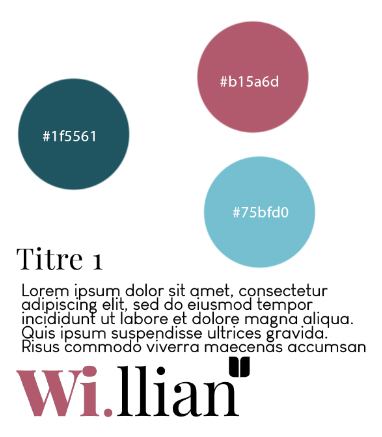
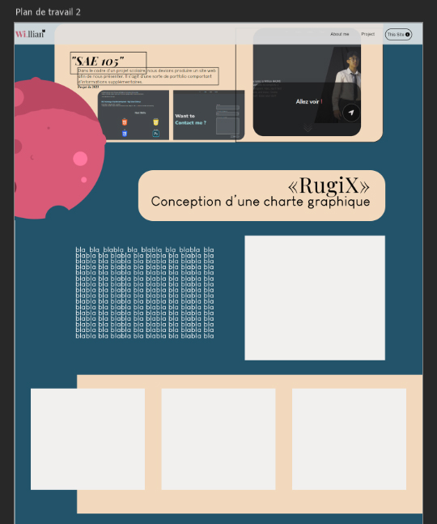
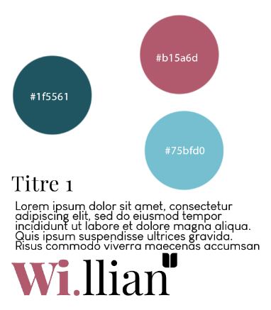
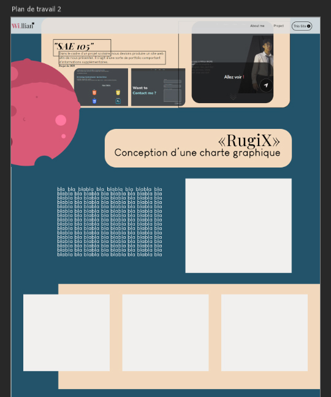
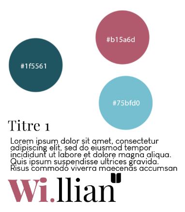
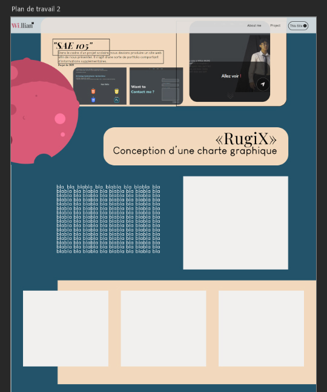

Au moment où je réalise ce portfolio, je suis en première année de mes études supérieures, en BUT MMI (métiers du multimédia et de l'internet, bac +3). Pour résumer en quelques mots ce que nous faisons (du moins en première année), nous explorons des notions de communication, de marketing, de création numérique, d'audiovisuel, et de développement web ; en bref, nous développons des compétences polyvalentes.
J’ai fait ce projet en dehors du cadre scolaire afin d'aiguiser et d’améliorer mes compétences en tant qu'étudiant de première année. C’est le premier portfolio que je réalise et je compte bien continuer !
Je vais maintenant vous présenter les étapes de la création du site. À noter que je me suis occupé de tout, seul (le design du site, les différents éléments de décoration, le codage (pas de template), … ).
J’ai d'abord commencé par faire un moodboard. Étant donné que j'accorde beaucoup d'importance à l'aspect esthétique, je voulais déjà avoir une idée approximative de ce que je voulais faire.
Ensuite, j’ai commencé à réfléchir à la structure du site. J’ai d'abord rassemblé toutes les idées des éléments, des sections, des onglets que je voulais pour mon site, puis je les ai triées. Ensuite, j’ai fait des croquis, des wireframes au format papier.
Maintenant que j’ai la structure de mon site, je définis son style en sélectionnant les teintes et palettes de couleurs du site ainsi que les typographies.
Je décide de reproduire le site sur Photoshop avant de le coder. Pour le développement du site, j’ai utilisé jQuery, et l’outil CSS @keyframes que j’ai découvert pendant ce projet.

